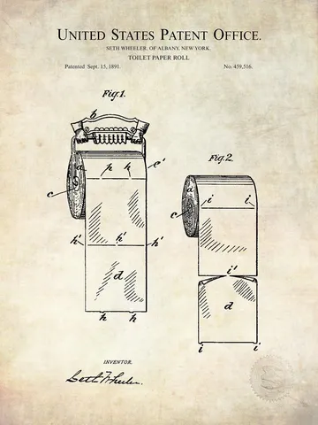

Хочется вернуться к обсуждению решения изобретательских задач. Когда мозговой штурм переходит в мозговую осаду, так как заходит в тупик, нужен какой-то алгоритм действий. Понимание законов, которым подчиняется развитие любых технических систем. Тут снова помогает ТРИЗ. Но сначала еще несколько мыслей про саму постановку задачи.
Начнем с того, что нельзя принимать на веру формулировку, в которой предлагают задачу. Там может крыться сразу клубок проблем. А на самом деле всегда должна быть одна центральная проблема. И порой в начальной формулировке ее даже не было. Нужно сначала докопаться до сути противоречия. Потому что изобретение - это в первую очередь преодоление противоречий. Впрочем, не всегда - в задачах выстшей степени сложности противоречий нет, так как нет прототипа, не удовлетворяющего задаче - нужно творить с нуля.
Есть интересный подход - перевести ситуацию в максимальную и минимальную задачи. Схема макси-задачи: требуется принципиально новая техническая система. Схема мини-задачи: нужно сохранить существующую систему, но обеспечить недостающее свойство минимальными изменениями имеющейся системы (и, порой, это оказывается сложнее макси-задачи). Сформулировав задачу в таких двух парадигмах может стать легче выбрать верный путь решения.
В любом случае нужно первым делом локализовать техническое или физическое противоречие, обострить конфликт свойств или состояний системы. Далее - сначала попытаться устранить источник зла, а потом, если не удастся, начать борьбу с ним. А для этого нужно повышать степень идеальности системы - если изменение не повышает ее, вы идете не туда.
В основе ТРИЗ - закономерности развития технических систем, "обученные" на базе всевозможных патентов и авторских свидетельств, подтверждающих эти закономерности. Например, закон увеличения степени динамичности. Все жесткое - сделать гибким. Почти как в старой поговорке - "если не двигается, а должно - смазать вэдэшкой; если двигается, а не должно - замотать серым скотчем".
Формула победы - максимальное переиспользование даровых вещественно-полевых ресурсов для приближения к идеальному конечному результату. Часто для этого нужно добавить управляющее воздействие. Например, с помощью модели веполей, когда вспомогательное вещество (скажем, ферропорошок) позволяет воздействовать на исходный объект с помощью поля (в нашем примере - магнитного).
Развитие технический систем идет в направлении увеличения управляемости (вепольности) и увеличения степени дробления (дисперсности) рабочих органов. Про дисперсность есть хорошая иллюстрация.
Рассмотрим старую технологию изготовления листового стекла. Раскаленная стеклянная лента поступает на роликовый конвейер. Передвигаясь по конвейеру, лента выравнивается, охлаждается и застывает. Качество поверхности зависит от расстояния между роликами, то есть от диаметра роликов. Как радикально уменьшить диаметр роликов? Довести до абсурда - самые маленькие ролики это атомы. Куча атомов-шариков. Нужна "ванна" с расплавленным металлом с низкой температурой плавления, например олово. Идеальные ролики - это когда роликов нет. А если через расплав пропустить ток и действовать на него при этом электромагнитным полем, можно еще и управлять формой поверхности расплава, а следовательно - формой стеклянного листа. Сейчас почти все листовое стекло производят именно так, это называется флоат-метод.
